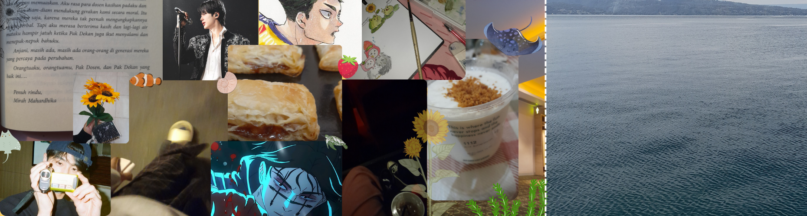
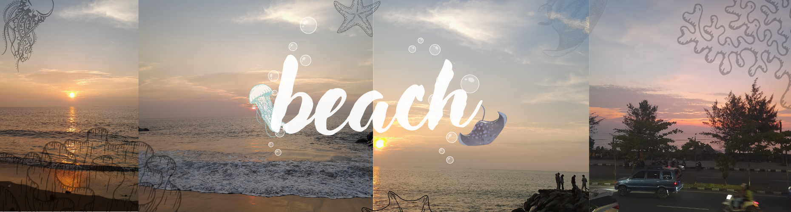

hai haiii.. nama saya Wafa Ainunnadya Al-Haq. tahun ini, saya berusia 17 tahun. hobi saya lumayan banyak. mulai dari memasak, menonton anime, dan bermain game. saya mengikuti ekskul program di sekolah. karena hal inilah web ini dibuat^^
Last updated 3 mins ago

salah satu hobi wapa yaitu menonton, terlebih lagi kalau anime. anime favorit wapaa yaitu haikyu. cuma sekarang lagi nonton solo leveling
yang kedua, hobi wapa yaitu memasak.. wapa mulai masak makanan yg agak berat, dari kelas 3 sd.. kadang kalau wafaa sempat dan niat, wapa bakal jual hasil masakan wapa ^^

kalau ada waktu luang, biasanya wapa suka bermain game online.. untuk saat ini.. wapa main mobile legend, projectsekai, genshin impact, roblox, dan hayday.

saat pertama kali masuk ekskul program, kami dikenalkan dengan bahasa pascal. diakhir, sebelum kami lanjut ke bahasa pemrogaman yang lain. kami selalu mendapat tugas akhir

ehe, ini wapa masukin kesini, karena cuma mempunyai ss codingan latihan checkbox ini:3

nah, portofolio ini adalah akhir dri segala tugas pemrogaman saat SMA (ekskul).
- okeh mungkin itu saja dahulu portofolio saya.. trimakasi sudah mampiir^^ -
- kalau mau kritik saran bisa ke ig yah, jangan lupa follow juga -